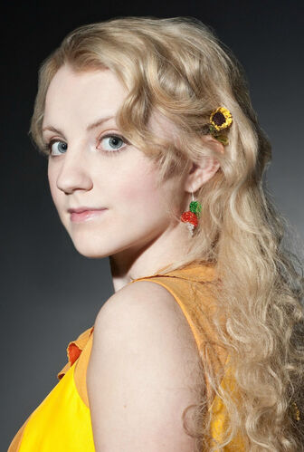

Luna Lovegood is a Ravenclaw student one year younger than Harry. She is described as having straggly waist-length dirty blond hair, grey eyes and a "permanently surprised look". Rowling has often said that Luna is the "anti-Hermione", as Hermione is "inflexible and logical," as opposed to Luna, who would "believe 10 impossible things before breakfast."[15] Her father, Xenophilius Lovegood, is the editor-in-chief of The Quibbler, a strange magazine claiming supposedly untrue things Luna and her father believe. When Luna was 9 years old, her mother Pandora died while performing a spell experiment, the particular one having gone, as Luna stated, "horribly wrong". Luna witnessed the incident, which enabled her to see Thestrals. Luna is socially isolated at school, and is given the nickname "Loony" Lovegood for her bizarre personality, but she appears to have the rare quality of caring little about what others think of her, although she sometimes gets incensed when her beliefs are challenged.
